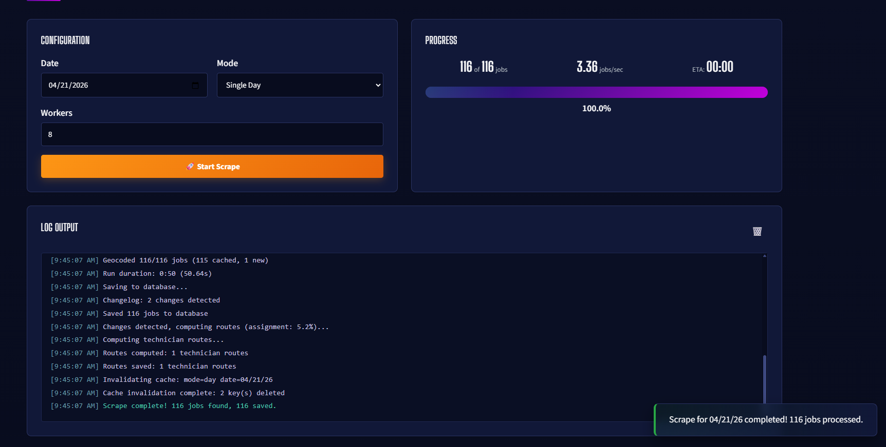
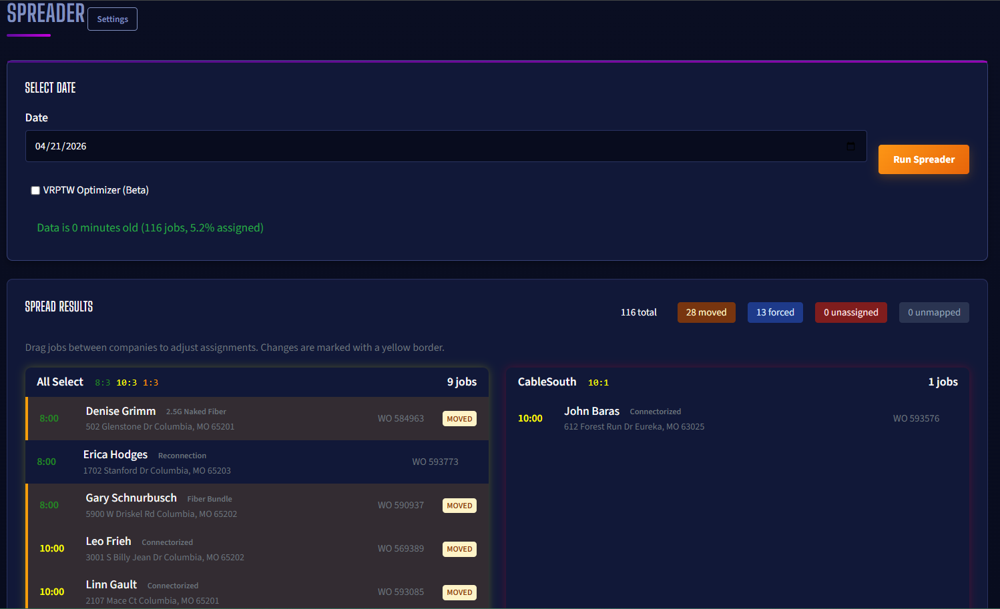
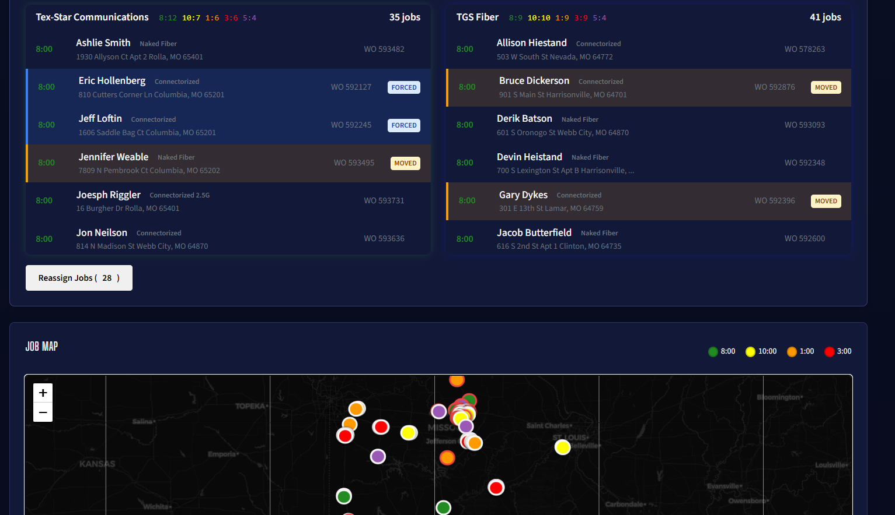
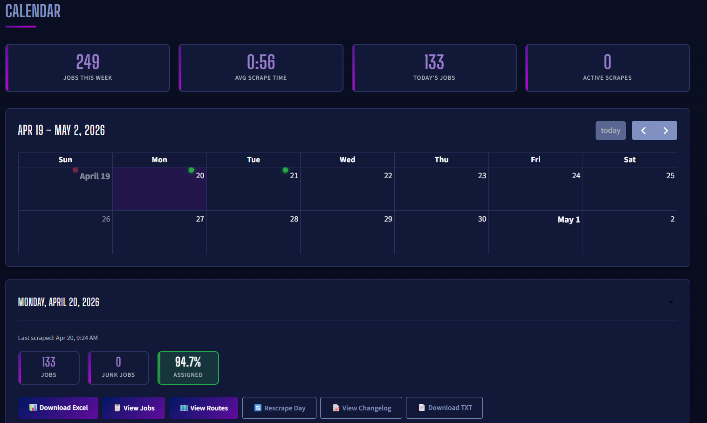

CalendarBuddy
Python automation platform that saves my team ~80 hours a week of manual data collection at Socket Fiber.
Four core parts: a FastAPI + Redis + Celery + PostgreSQL web interface, plus three async Playwright modules imported into the same Docker environment — the Scraper (pulls installation jobs with a 16-job concurrent worker pool), the Spreader (a VRPTW solver that builds optimized technician routes from imported configuration), and the Assigner (routes returned jobs to the correct technician and contracting company). My team uses it multiple times a day, and it has almost completely automated my job. Taught me everything I know about CI/CD, deployment best practices, automated linting, and why everything ends up as a web app.
- Python
- FastAPI
- Celery
- Redis
- PostgreSQL
- Playwright
- Docker